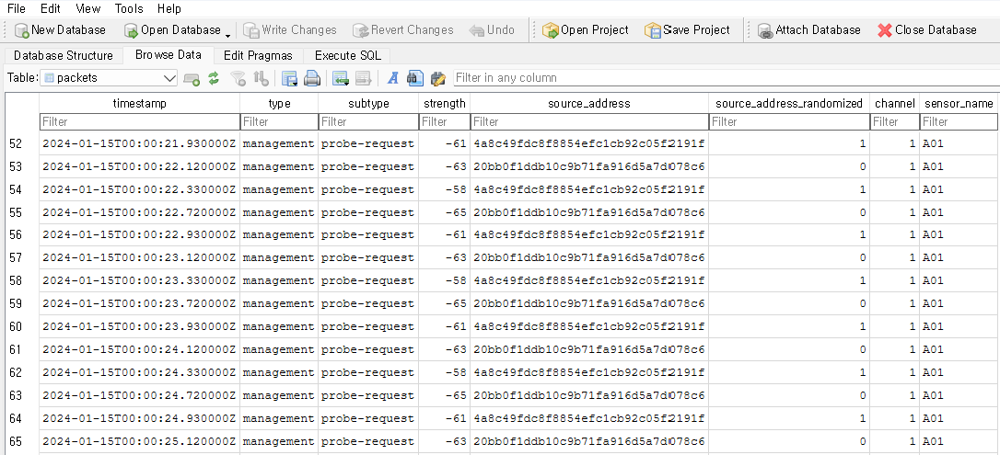

%%{init: {'theme': 'base', 'themeVariables': { 'primaryColor': '#e8f4f8', 'primaryTextColor': '#1a1a1a', 'primaryBorderColor': '#5c9ead', 'lineColor': '#5c9ead', 'secondaryColor': '#f0f7e6', 'tertiaryColor': '#fff5e6'}}}%%
flowchart LR
A[Pseudonymized<br/>Observations<br/>SQLite3] -->|load| B[Filter]
subgraph B[Filtering]
direction TB
F1[Time Window] --> F2[Frame Type] --> F3[Signal Strength]
end
B -->|aggregate| C[1-Second<br/>Intervals]
C -->|save| D[Parquet<br/>by default]
style A fill:#e8f4f8,stroke:#5c9ead
style B fill:#f0f7e6,stroke:#7cb342
style C fill:#fff5e6,stroke:#f9a825
style D fill:#fce4ec,stroke:#c2185b
5 Aggregation
WiFi-enabled devices continuously transmit IEEE 802.11 frames, including probe requests used to discover nearby networks. A single smartphone can generate thousands of observations per hour. Before analysis, this observation stream must be filtered and compressed into meaningful records.
This chapter covers the aggregation pipeline: loading minimized, pseudonymized observations from the database, filtering by time, frame type, and signal strength, then grouping them into time intervals. The result is a compact dataset where each row represents one retained pseudonymous identifier detected at one sensor during one time interval.
5.1 Database Overview
The collector stores minimized observations in an SQLite3 database, a portable, file-based format. You can inspect its structure using DB Browser for SQLite. This chapter uses a fully synthetic database that implements the same eight-field packets contract as the maintained collector.
If you do not have an SQLite database produced by the collector, download the synthetic tutorial archive and its SHA-256 checksum. This supplied example is not created by the collector and contains no field observations. Verify the archive, create an empty folder named urban-wifi-synthetic-pipeline, and extract the ZIP into that folder.
In DB Browser, choose File > Open Database. Within the extracted urban-wifi-synthetic-pipeline folder, open workflow > ch3_tutorial > maintained_capture_fixture > maintained_capture.sqlite3. Then choose Browse Data and select the packets table, as shown in Figure 5.1.

packets table in the maintained synthetic SQLite fixture. The source_address values are 32-character pseudonymous identifiers; the 0/1 flag records the locally administered bit of the corresponding original address.
The packets table contains the following attributes:
timestamp: UTC observation time in RFC 3339 format, ending inZtype: frame category,managementordatasubtype: parsed IEEE 802.11 subtype, such asprobe-requeststrength: signal strength in dBm; lower values indicate weaker signalssource_address: 32-character lowercase deployment-scoped HMAC-SHA-256 pseudonym, not a MAC addresssource_address_randomized: locally administered bit read from the observed address before HMAC processing (0or1)channel: configured WiFi channel on which the frame was observedsensor_name: opaque identifier of the sensor that recorded the observation
Each processing stage keeps fewer fields:
- Capture keeps the full minimized observation contract:
timestamp,type,subtype,strength,source_address,source_address_randomized,channel, andsensor_name. - One second keeps
timestamp,source_address,sensor_name,source_address_randomized,rssi_median, andpacket_count. By this pointtypeandsubtypehave served the frame filter,channelhas served the capture-quality checks, and packet rows have collapsed into one source–sensor–second record. - Twenty seconds keeps
timestamp,source_address,sensor_name,rssi_median,rssi_sum,detections, andstrength_sum. Locally administered addresses and stationary identifiers have been removed, and the remaining fields support the five documented metrics.
deployment_id, identifier-scheme metadata, and interface/channel loss counters belong in the separate capture_metadata and capture_interface_summary tables. Repeating them on every observation would add redundancy without supporting the metrics.
ImportantIdentifier scope
For one deployment, every sensor and date uses the same opaque deployment ID and the same secret 32-byte key. The collector stores the first 16 bytes of a domain-separated HMAC-SHA-256 value as 32 lowercase hexadecimal characters. A later deployment uses a new ID and key, preventing direct cross-deployment linkage. These records remain pseudonymous, not anonymous.
TipRun the whole pipeline with one command
The code walkthrough below makes each operation visible. For routine processing, run the pipeline from either the extracted urban-wifi-synthetic-pipeline folder or the repository root:
Rscript scripts/pipeline/run_pipeline.R \
--input workflow/ch3_tutorial/maintained_capture_fixture/maintained_capture.sqlite3 \
--output-dir workflow/ch3_tutorial/maintained_pipelineThe command creates and verifies 01_aggregated_1second.parquet, 02_cleaned_1second.parquet, and 03_analysis_20second.parquet. The last file has the same format as the released datasets in data/release-20sec/: timestamp, source_address, sensor_name, rssi_median, rssi_sum, and detections, plus the derived score strength_sum = 100 * detections + rssi_sum.
Data from your own deployment remains pseudonymous, not anonymous; publishing it requires a separate decision and fresh re-pseudonymization.
5.2 Load and Process in R
The following section applies the same stages step by step to the synthetic fixture.
NoteArchive contents
The tutorial archive downloaded above contains the synthetic SQLite database, checked one-second and 20-second outputs, the five metric outputs, and the scripts needed to reproduce them. Its identifiers are HMAC outputs from synthetic scenario labels under a public test-only key; they are not derived from observed addresses.
database_relative <- file.path(
"workflow", "ch3_tutorial", "maintained_capture_fixture",
"maintained_capture.sqlite3"
)
database_candidates <- file.path(
c(".", "urban-wifi-synthetic-pipeline", ".."), database_relative
)
database_path <- database_candidates[file.exists(database_candidates)][1]
if (is.na(database_path)) {
stop("Extract the ZIP into a folder named urban-wifi-synthetic-pipeline and run from that folder, or use a repository checkout.")
}Install Packages
pacman::p_load() installs missing packages and loads them in one step.
if (!require(pacman)) install.packages("pacman")
pacman::p_load(RSQLite, DBI, data.table, lubridate, arrow, knitr)RSQLiteandDBI: Connect to SQLite databasesdata.table: Fast data manipulationlubridate: Parse and manipulate timestampsarrow: Read and write Parquet filesknitr: Format tables for display
NoteWhy data.table instead of tidyverse?
Raw WiFi data often contains millions of rows. data.table is significantly faster and more memory-efficient than dplyr for large datasets, making it the preferred choice for this pipeline.
Connect and Query
Connect to the database, query the exact eight-field contract, and convert the result to a data.table. The code renames strength to rssi only within the analysis session.
conn <- dbConnect(SQLite(), "path/to/your/database.sqlite")
wifi_data <- dbGetQuery(conn,
"SELECT timestamp, type, subtype, strength,
source_address, source_address_randomized,
channel, sensor_name
FROM packets")
wifi_data <- as.data.table(wifi_data)
setnames(wifi_data, "strength", "rssi")Here are the first few rows:
| timestamp | type | subtype | rssi | source_address | source_address_randomized | channel | sensor_name |
|---|---|---|---|---|---|---|---|
| 2024-01-15T00:00:00.110000Z | data | qos-data | -46 | c463ebe40642f502c23f466edb4dfde5 | 0 | 1 | A01 |
| 2024-01-15T00:00:00.120000Z | management | probe-request | -66 | 20bb0f1ddb10c9b71fa916d5a7d078c6 | 0 | 1 | A01 |
| 2024-01-15T00:00:00.610000Z | data | qos-data | -48 | c463ebe40642f502c23f466edb4dfde5 | 0 | 1 | A01 |
| 2024-01-15T00:00:00.720000Z | management | probe-request | -68 | 20bb0f1ddb10c9b71fa916d5a7d078c6 | 0 | 1 | A01 |
| 2024-01-15T00:00:01.120000Z | management | probe-request | -66 | 20bb0f1ddb10c9b71fa916d5a7d078c6 | 0 | 1 | A01 |
Filter by Time
Subset the data to your period of interest. Here we extract the first three minutes of the synthetic fixture in UTC:
start_date <- ymd_hms("2024-01-15 00:00:00", tz = "UTC")
end_date <- ymd_hms("2024-01-15 00:03:00", tz = "UTC")
wifi_data_filtered_time <- wifi_data[
between(ymd_hms(timestamp, tz = "UTC"), start_date, end_date)
]Filter by Frame Type
Stored observations can include management and data frames. The maintained default excludes the exact subtypes beacon and probe-response, which are commonly emitted by fixed infrastructure. Remaining persistent sources are handled by the stationary-identifier filter in the next chapter. The synthetic fixture contains probe-request and qos-data observations, so this particular demonstration does not lose a row at this stage.
excluded_subtypes <- c("beacon", "probe-response")
wifi_data_filtered_frame <- wifi_data_filtered_time[
!tolower(subtype) %in% excluded_subtypes
]
NoteFrame type distribution
Probe requests are a small fraction of all WiFi traffic. The table below shows frame type distribution from a month-long campus deployment. Probe requests account for only 2.6% of packets, while responses and data frames dominate:
| Type | Subtype | Count | Proportion |
|---|---|---|---|
| Management | probe-request | 714,353 | 2.6% |
| Management | probe-response | 9,532,383 | 35.3% |
| Management | authentication | 352,856 | 1.3% |
| Data | null | 8,716,923 | 32.3% |
| Data | qos-data | 4,875,257 | 18.1% |
| Data | qos-null | 2,253,010 | 8.4% |
Filter by Signal Strength
Received signal strength (RSSI) is a noisy proximity indicator rather than a direct distance measurement: device hardware, body shielding, and the surrounding environment all affect it. This walkthrough retains observations between -80 and -30 dBm, matching the maintained default. The bounds exclude very weak observations and unusually strong signals that may come from equipment placed beside a sensor; they are analytical parameters that should be calibrated and reported for each deployment.
wifi_data_filtered_strength <- wifi_data_filtered_frame[between(rssi, -80, -30)]Aggregate by Interval
A source can produce multiple stored observations per second. We collapse these into one record per retained pseudonymous identifier, sensor, and UTC second, keeping the median signal strength and observation count.
wifi_data_filtered_strength[, timestamp := floor_date(
ymd_hms(timestamp, tz = "UTC"), unit = "second"
)]
aggregated_data <- wifi_data_filtered_strength[, .(
rssi_median = median(rssi),
packet_count = .N
), by = .(sensor_name, source_address, source_address_randomized, timestamp)]
setcolorder(aggregated_data, c(
"timestamp", "source_address", "sensor_name",
"source_address_randomized", "rssi_median", "packet_count"
))
setorder(aggregated_data, timestamp, source_address, sensor_name)
head(aggregated_data) timestamp source_address sensor_name
<POSc> <char> <char>
1: 2024-01-15 00:00:00 20bb0f1ddb10c9b71fa916d5a7d078c6 A01
2: 2024-01-15 00:00:00 c463ebe40642f502c23f466edb4dfde5 A01
3: 2024-01-15 00:00:01 20bb0f1ddb10c9b71fa916d5a7d078c6 A01
4: 2024-01-15 00:00:02 20bb0f1ddb10c9b71fa916d5a7d078c6 A01
5: 2024-01-15 00:00:03 20bb0f1ddb10c9b71fa916d5a7d078c6 A01
6: 2024-01-15 00:00:04 20bb0f1ddb10c9b71fa916d5a7d078c6 A01
source_address_randomized rssi_median packet_count
<int> <num> <int>
1: 0 -67 2
2: 0 -47 2
3: 0 -67 2
4: 0 -67 2
5: 0 -67 2
6: 0 -67 2Save and Close
Write the one-second result to Parquet. The next chapter reads the complete, preverified 01_aggregated_1second.parquet included in the same synthetic archive.
write_parquet(aggregated_data, "01_aggregated_1second.parquet")
dbDisconnect(conn)5.3 Pipeline Summary
Each step has a distinct purpose. The time filter defines the analysis period; the subtype and RSSI filters enforce declared inclusion rules; and aggregation compresses multiple observation rows without changing the identifier scope. A filter can legitimately remove no rows in a deliberately small synthetic example.
summary_table <- data.table(
Step = c("Initial", "After Time Filter", "After Frame Filter", "After Strength Filter", "After Aggregation"),
Records = c(nrow(wifi_data), nrow(wifi_data_filtered_time), nrow(wifi_data_filtered_frame), nrow(wifi_data_filtered_strength), nrow(aggregated_data)),
Distinct_Identifiers = c(
length(unique(wifi_data$source_address)),
length(unique(wifi_data_filtered_time$source_address)),
length(unique(wifi_data_filtered_frame$source_address)),
length(unique(wifi_data_filtered_strength$source_address)),
length(unique(aggregated_data$source_address))
)
)
print(summary_table) Step Records Distinct_Identifiers
<char> <int> <int>
1: Initial 1396 5
2: After Time Filter 538 4
3: After Frame Filter 538 4
4: After Strength Filter 538 4
5: After Aggregation 269 45.4 Automate the Pipeline
The maintained collector creates one database file per service run, so processing many sensors and sessions by hand quickly becomes impractical. For multi-day work, define bounded daily sessions, then stop, verify, and transfer each database before the next session begins. The pipeline command shown above is the default automated route; the helper below exposes the same first-stage logic for teaching.
Single Database
The aggregate_data() function takes a database path, time range, and aggregation interval, then writes the result to a Parquet file.
aggregate_data <- function(db_path, start_date, end_date, interval = "second", output_suffix = "_1second.parquet") {
conn <- dbConnect(SQLite(), db_path)
wifi_data <- dbGetQuery(conn, "SELECT timestamp, type, subtype, strength, source_address, source_address_randomized, channel, sensor_name FROM packets")
setDT(wifi_data)
setnames(wifi_data, "strength", "rssi")
wifi_data <- wifi_data[between(ymd_hms(timestamp, tz = "UTC"), start_date, end_date)]
wifi_data <- wifi_data[!tolower(subtype) %in% c("beacon", "probe-response")]
wifi_data <- wifi_data[between(rssi, -80, -30)]
wifi_data[, timestamp := floor_date(ymd_hms(timestamp, tz = "UTC"), unit = interval)]
aggregated_data <- wifi_data[, .(rssi_median = median(rssi), packet_count = .N), by = .(sensor_name, source_address, source_address_randomized, timestamp)]
setcolorder(aggregated_data, c("timestamp", "source_address", "sensor_name", "source_address_randomized", "rssi_median", "packet_count"))
setorder(aggregated_data, timestamp, source_address, sensor_name)
output_path <- sub("\\.sqlite3$", output_suffix, db_path)
write_parquet(aggregated_data, output_path)
dbDisconnect(conn)
}Run on a single file:
start_date <- ymd_hms("2024-01-15 00:00:00", tz = "UTC")
end_date <- ymd_hms("2024-01-15 00:03:00", tz = "UTC")
aggregate_data(database_path, start_date, end_date, interval = "second")Multiple Databases
Use purrr::map() to apply the function across verified databases. Each file produces a corresponding Parquet file.
pacman::p_load(purrr)
db_files <- list.files(dirname(database_path), pattern = "\\.sqlite3$", full.names = TRUE)
print(db_files)
start_date <- ymd_hms("2024-01-15 00:00:00", tz = "UTC")
end_date <- ymd_hms("2024-01-15 00:03:00", tz = "UTC")
map(db_files, ~aggregate_data(.x, start_date, end_date, interval = "second"))